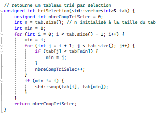

Dans le cadre d'un projet de groupe, j'ai été chargé de développer plusieurs algorithmes de tri et de les tester sur des tableaux plus ou moins mélangés pour évaluer leur performance. L'objectif était de comprendre les points forts et les faiblesses de chaque algorithme, car dans des projets réels, les développeurs sont souvent amenés à utiliser des algorithmes de tri. Il est donc crucial de savoir lequel choisir en fonction du contexte et des besoins spécifiques.
Pour ce projet, j'ai choisi d'implémenter les algorithmes de tri suivants :
| Nom de l'Algorithme | Explication | Lien wikipedia |
|---|---|---|
| Tri à bulles | Le tri à bulles compare et échange les éléments adjacents jusqu'à ce que la liste soit triée. C'est simple mais peu efficace pour les grandes listes. | Lien |
| Tri à bulles optimisé | Une amélioration du tri à bulles qui arrête les passes lorsqu'aucun échange n'est nécessaire, rendant le tri plus rapide sur les listes partiellement triées. | Lien |
| Tri rapide (Quick Sort) | Le tri rapide divise la liste en sous-listes autour d'un pivot, puis trie les sous-listes. Il est généralement très rapide mais peut avoir de mauvaises performances dans certains cas. | Lien |
| Tri à peigne (Comb Sort) | Le tri à peigne améliore le tri à bulles en réduisant progressivement l'écart entre les éléments comparés, ce qui permet de trier plus efficacement. | Lien |
| Tri par selection | Le tri par sélection trouve le plus petit élément de la liste et le place en première position, puis répète ce processus pour les éléments restants jusqu'à ce que la liste soit triée. | Lien |
J'ai écrit le code des différents algorithmes de tri en C++ en m'assurant qu'ils fonctionnaient correctement. J'ai également ajouté des fonctions pour générer des tableaux aléatoires, les trier et les afficher.
Une fois les algorithmes implémentés, j'ai testé leurs performances sur des tableaux de différentes tailles et degrés de désordre. J'ai mesuré le temps d'exécution de chaque algorithme et j'ai comparé les résultats pour déterminer lequel était le plus rapide dans chaque cas.
Ci-dessous, deux exemples de graphiques réalisés avec les données de mon algorithme. On a aussi rajouté la courbe N² et N*ln(N) pour avoir une meilleure vision de la comparaison.
Sur la première image, le tableau est partiellement trié au début. Cela permet d'identifier quel est le meilleur algorithme lorsque les données ne sont pas complètement aléatoires.
Sur la deuxième image, le tableau est presque entièrement trié. Il ne reste que quelques éléments mal placés.
En général, toutes les fonctions sont comprises entre les courbes de N² et de N*ln(N). Si l’on veut trier un tableau totalement en désordre, il est préférable d’utiliser la fonction de tri rapide. Si le tableau est partiellement trié et qu’un seul côté (soit le début, soit la fin) est à trier, il est préférable de choisir la fonction de tri à bulles optimisé. Mais, comme nous l’avons vu, si le tableau est partiellement trié, la fonction de tri rapide reste la meilleure. Au final, dans tous les cas, il est préférable d'utiliser la fonction de tri rapide qui est toujours dans les deux meilleures options.
Il aurait été intéressant de développer une interface utilisateur permettant à ce dernier de tester lui-même en direct les algorithmes de tri. Cela est possible en utilisant des frameworks comme QT. J'aurais également pu tester d'autres algorithmes de tri comme le tri par fusion ou le tri par tas pour avoir une vision plus complète des possibilités. Cependant, ce fut un bon projet pour développer mes compétences en C++.
{kind=link}
{kind=link}